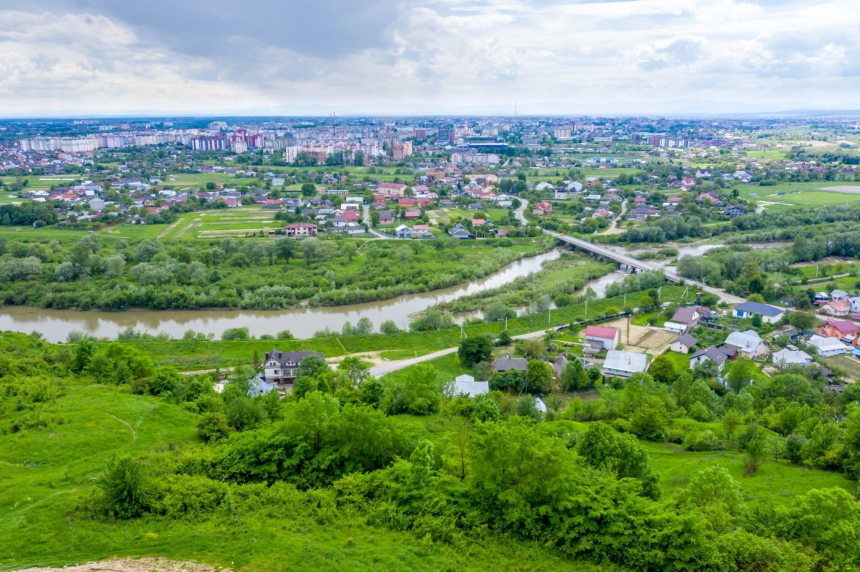

Вовчине́цькі го́ри — комплексна пам'ятка природи місцевого значення в Україні. Розташована на виїзді з Івано-Франківська, біля села Вовчинець. Площа — 30 га. Статус отриманий у 1997 році.
Щороку іншого кольору. Вовчинецькі гори - частина Покутської височини, що сягає 300-350 метрів над рівнем моря, з похилими схилами та плоскою поверхнею. Вовчинецькі гори дуже різноманітні і цікаві. Там можна побачити і гіпсові скелі, і ліси, і поля, а омивають їх швидкі гірські річки: Бистриці Надвірнянська і Солотвинська, які за селом зливаються в одну і течуть вздовж гір аж до Дністра, та більш повільна річка Ворона, яка впадає у Бистрицю Надвірнянську. Це місце є одним з найкращих для відпочинку та огляду панорами міста. Також, тут є ландшафтний заказник Козакова Долина, багато скель, серед яких скельний монастир навпроти Ямниці, пляжі… Щороку, залежно від погоди та інших факторів, на Вовчинецьких горах трохи змінюється рослинність, масово цвітуть різні квіти – наприклад, одного року всі схили можуть бути фіолетовими від шавлії, іншого – цілі поля заростають звіробоєм або ромашкою.У верхній частині гори від села Вовчинець до села Ганнусівки прокладено велосипедний туристичний екологічний маршрут довжиню траси 25 кілометрів.
Від кам’яної доби до воїнів УПА. На Вовчинецьких горах життя зародилося ще в кам’яну добу. У Вовчинці були печери, в яких знайдено кераміку бронзової доби. А наприкінці кам’яної доби тут гостювала група людей високої культури, які вміли обробляти кремнієві камені.За архівними даними, село Вовчинець вперше згадане у 1378 році. В окремих місцях сучасного Вовчинця ріс густий дубовий ліс. До речі, на цій території водилося багато вовків, і тому її, а згодом і село назвали «Вовчинець». У 1662 році біля села почалося будівництво Станиславова. Одні історики переконують, що в Козаковій Долині перебували панські козаки-гайдуки, а інші - що тут побували запорізькі козаки, а також повстанці українського військового діяча Семена Височана. Цікаво, що до 1916 року на Вовчинецьких горах був розташований мисливський будиночок Потоцького. Але під час російсько-австрійських боїв його зруйнували. Неподалік від того місця нині зводять красивий готельно-відпочинковий комплекс. Тут точилися бої під час війн та між воїнами УПА і загонами НКВС-КДБ.
Містика Бійної гори. У давні часи цей масив мав назву Бійна гора. Колись через гору пролягала дорога (Жовтий вивіз). Саме з козаками народна традиція пов’язує і назву гори. Старожили розповідали, що свого часу на цьому місці відбувся великий бій між козаками і польським загоном графа Потоцького. Від того бою гора начебто й отримала свою назву. А від загиблих козаків, яких побратими поховали на поляні над долиною, остання дістала назву Козацька. Ця гора таїть у собі багато інших загадок. В незапам’ятні часи на Бійній горі мешкали великі люди – Велети, або Леви, які настільки розгордилися, що почали до неба будувати величезні сходи, аби Бога з неба вигнати, але були покарані потопом, який їх винищив. Уціліло тільки два Велети – старий і молодий, які схоронилися на найвищій горі, але в їхньому роді не було жінок, і вони з часом вимерли. Після потопу створив Бог менших людей, таких, як нині, які довго залишалися під владою чортів і бісів, яких винищив св. Яцек з домініканами. Тоді в лісі на Бійній горі над Бистрицею, яка в тім місці творить озеро, постав монастир ченців. Ті монахи з часом попали у великий гріх, і Бог їх покарав, бо цілий монастир запався глибоко в землю. Лишилася тільки скеля з печерами. На Івана Купала вночі з-під землі чути дзвони і співи тих монахів. Селяни були глибоко переконані: ходити по Бійній горі, особливо вночі, дуже небезпечно. Кажуть, що де падає перший промінь сонця -запасний хід до печери, де скарби опришків закопані, а від монастиря аж до села Уніж тягнеться підземний хід. Також відомо, що в часи виникнення Станиславова була мода на магію. Легенди стверджують, що Потоцькі вчилися окультній науці у кабаліста ребе Еліяху, який жив у Вовчинецьких горах. Вельможі зверталися за порадою до кабалістів, питали про майбутнє, просили захисту від прокльонів, з їхньою допомогою шукали підземні скарби і передбачали ворожі напади. До речі, Бистрицю Надвірнянську, яка протікає біля Вовчинецької гори, багато середньовічних містиків вважали цілющою і «ритуально чистою».